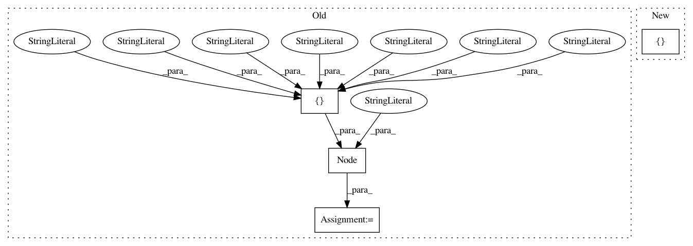

eb9e3340451e4ec7702ce236d0dea3874e31f6f9,pynets/workflows.py,,rsn_structural_connectometry,#Any#Any#Any#Any#Any#Any#Any#Any#Any#Any#Any#Any#Any#Any#Any#Any#Any#Any#Any#Any#Any#Any#Any#Any#,776
Before Change
////Node generation
if mask is not None:
node_gen_node = pe.Node(niu.Function(input_names=["mask", "coords", "parcel_list", "label_names", "dir_path", "ID", "parc"],
output_names=["net_parcels_map_nifti", "coords", "label_names"],
function=nodemaker.node_gen_masking, imports = import_list), name = "node_gen_masking_node")
else:
node_gen_node = pe.Node(niu.Function(input_names=["coords", "parcel_list", "label_names", "dir_path", "ID", "parc"],
output_names=["net_parcels_map_nifti", "coords", "label_names"],
function=nodemaker.node_gen, imports = import_list), name = "node_gen_node")
After Change
thresh_diff_node.iterables = thresh_diff_node_iterables
if node_size_list and parc is False:
grow_nodes_node_iterables = []
grow_nodes_node_iterables.append(("node_size", node_size_list))
grow_nodes_node.iterables = grow_nodes_node_iterables
////Connect nodes of workflow
In pattern: SUPERPATTERN
Frequency: 3
Non-data size: 4
Instances
Project Name: dPys/PyNets
Commit Name: eb9e3340451e4ec7702ce236d0dea3874e31f6f9
Time: 2018-05-28
Author: dpisner@utexas.edu
File Name: pynets/workflows.py
Class Name:
Method Name: rsn_structural_connectometry
Project Name: dPys/PyNets
Commit Name: b0f4bf096025305a23aac45e6cd0ce118746f7d2
Time: 2018-01-31
Author: dpisner@utexas.edu
File Name: pynets/workflows.py
Class Name:
Method Name: rsn_functional_connectometry
Project Name: dPys/PyNets
Commit Name: eb9e3340451e4ec7702ce236d0dea3874e31f6f9
Time: 2018-05-28
Author: dpisner@utexas.edu
File Name: pynets/workflows.py
Class Name:
Method Name: wb_structural_connectometry